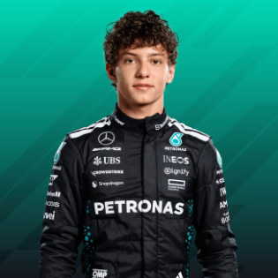
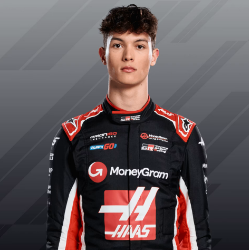
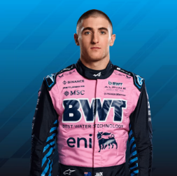
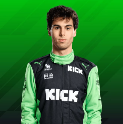

Andrea Kimi Antonelli – Mercedes junior driver Kimi Antonelli is considered one of the most promising talents in motorsport, having dominated Formula Regional and F4 championships before making his F2 debut in 2024.

Oliver Bearman – British racing driver Oliver Bearman made headlines when he impressively substituted for Carlos Sainz at Ferrari during the 2024 Saudi Arabian Grand Prix, finishing in the points on his unexpected F1 debut.
Isack Hadjar – French-Algerian driver Isack Hadjar has built a reputation as one of Red Bull's most promising junior talents with his spectacular overtaking moves and qualifying pace.

Jack Doohan – Alpine Academy driver Jack Doohan, son of motorcycle legend Mick Doohan, combines technical precision with aggressive racecraft that has earned him numerous F2 wins and a reserve driver role with the Alpine F1 team.

Gabriel Bortoleto – Brazilian talent Gabriel Bortoleto stunned the racing world by winning the Formula 3 championship as a rookie in 2023, showcasing exceptional race management skills and consistency that quickly earned him a place in McLaren's junior program.
Liam Lawson – Despite impressing during his brief 2023 F1 stint replacing the injured Daniel Ricciardo and delivering standout performances that included points finishes, Liam Lawson's fierce determination has only intensified after being overlooked for the 2024 Red Bull seat in favor of Sergio Perez.